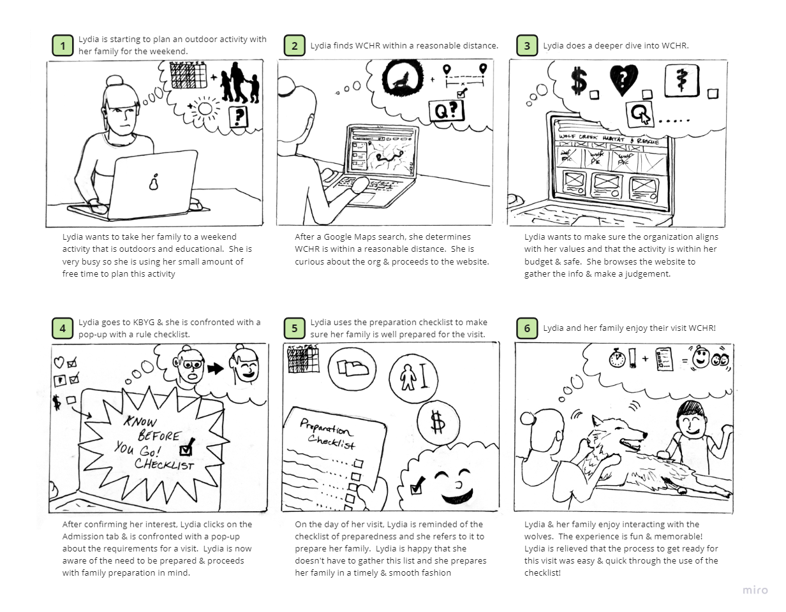
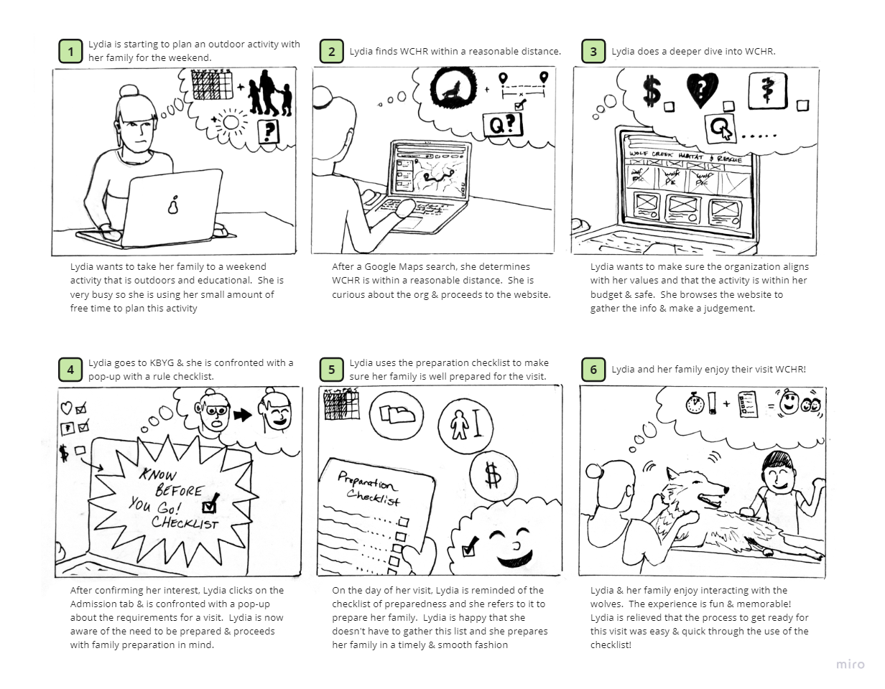

Discovery
This collaborative project involved redesigning and rebranding a non-profit website and app in order to increase visitor compliance with the rules and guidelines for interactions with the wolves (the primary means of non-profit funding), as well as to increase wolf sponsorships.
We had the valuable opportunity to engage in discussions with the stakeholder and owner of the rescue, regarding the non-profit and its specific problems and needs. During these conversations, the stakeholder highlighted a recurring challenge she faces, wherein visitors often arrive without having familiarized themselves with the rules and guidelines outlined on the website prior to visiting.
Consequently, she finds herself in the unenviable position of having to enforce these rules and occasionally turn away individuals, resulting in her feeling burdened with the role of the "bad guy."
Imagine a family with kids showing up to interact with the wolves unprepared because they missed some important requirements listed on the website, specifically the five foot requirement, and their little Sally is just under five feet... Nobody wants to have to turn Sally away from an amazing experience because of her height.
Recognizing the undesirability of this situation, we were determined to assist Kathy by presenting her with a website redesign aimed at reducing the frequency of such incidents. Our objective is to alleviate the need for her to assume this challenging role. Additionally, Kathy expressed a desire to enhance the visibility of wolf sponsorships on the website, an aspect we also aim to address in our proposed redesign.
Definition
The research conducted for this project involved utilizing surveys and user interviews, including a significant interview session with the non-profit stakeholder.
In our exploration of the both the stakeholder's and users' perspectives, we sought to understand their thoughts and feelings regarding wildlife sanctuaries or rescues.
The following key questions guided our inquiry:
- What factors influence their decision-making and planning when visiting such sanctuaries?
- How do they perceive and engage with the concept of donating to these organizations?
- Are there additional ways in which they feel compelled to support these organizations, beyond monetary contributions?
- How do users navigate and utilize non-profit websites and the underlying motivations driving their behavior?
Users generally affirmed the importance of interacting with wildlife when visiting animal sanctuaries, that the non-profits's mission must be clearly stated, and it must be easy to access necessary visitor information.


 

Problem Statement
Users encounter difficulty in easily accessing comprehensive information regarding the mission of the organization and the various means through which they can actively contribute, either by visiting the sanctuary or making donations to support the commendable efforts undertaken by Wolf Creek Habitat & Rescue.
User Insight
Through user research, it became apparent that users require a streamlined presentation of crucial information when preparing to visit a wildlife sanctuary. This empowers them to effectively plan their visit, ensuring that they are well-prepared for an enriching experience.
Heauristics Evaluation
We performed a Heuristic Evaluation of the website, uncovering several key areas for improvement:
- Navigation: The navigation menu contained an excessive number of links leading to separate pages, comprising a total of 17 main navigation menu items. To enhance usability, we recommended reorganizing the information hierarchy within the navigation menu for improved clarity and ease of navigation.
- Branding: The site lacked a clear and consistent branding approach, noticeable by the absence of a logo on the website. We highlighted the need for establishing a distinct visual identity to enhance brand recognition and build user trust.
- Donation CTAs: On the main page, there were multiple visible donate buttons positioned above the fold. This redundancy could create confusion for users and dilute the desired call-to-action. We suggested consolidating and strategically placing the donate buttons to ensure a clear and focused user pathway.
- Typography: The website exhibited a wide range of typographic styles and color choices, which adversely affected the user's ability to swiftly scan the page for essential information. Streamlining the typography and color palette would enhance readability and facilitate information retrieval for users.


Ideation
Taking these findings into account, we initiated a brainstorming session and developed a feature prioritization matrix to focus on the core goals of the redesign, which encompassed the following objectives:
- Establish a distinct and cohesive branding identity.
- Streamline the user journey by reducing the number of links and pages required to access the necessary information for visiting.
- Condense the information presented to include only the most crucial details, ensuring a more concise and user-friendly experience.
- Implement a clear and intuitive navigation menu hierarchy, enhancing usability and promoting a sense of logical organization.
By prioritizing these redesign goals, we aimed to create a website redesign that addresses the identified issues, improves the user experience, and guides visitors effectively to the information they need.
We developed a storyboard to demonstrate the user's experience as they journey through the website. (See storyboard below)
We drew some rough paper scetches and began creating wireframes, drawing inspiration from professional and modern non-profit websites.
- Meet The Wolf Section: To enhance user interaction and establish a stronger connection with the audience, we opted to incorporate cards within this section. These cards provide an engaging and personal touch, fostering a sense of familiarity.
- Clear and Concise Headers and Body: In order to direct users to vital information with minimal distractions, we deliberately chose clear and concise headers and body text. This approach ensures that users can easily navigate the website and find the relevant content they seek.
- Emphasis on White Space: Throughout the wireframes, we significantly increased the utilization of white space. By introducing ample breathing room between elements, we created a clean and uncluttered visual environment. This deliberate use of white space enhances readability, focus, and overall aesthetic appeal.
(Mid-fidelity wireframes shown below)

These wireframes serve as a visual blueprint, guiding the subsequent design and development phases, while aiming to provide an exceptional user experience that aligns with modern design standards.
Prototyping & Iterations
After we had developed a rough idea of how the website would be outlined, we started creating high-fidelity prototypes
In order to do so, we developed a new logo and branding style, using a UI style tile.
A/B & User Testing
With regard to our call-to-action cards, we conducted A/B testing to evaluate their effectiveness in capturing the attention of potential web visitors.
Notable changes in these cards include:
- Enhanced prominence of the wolves' names, which we made more bold.
- The buttons on the cards needed larger font in order to increase user readability. This adjustment ensures that users can easily grasp the information presented and take the desired actions without any readability challenges.
- Hours and information on the Know Before You Go page was moved from the bottom of the page to the top to prevent the need for scrolling down in order to find this important information.